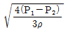
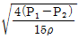
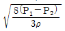
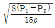
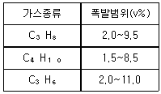
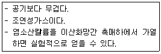
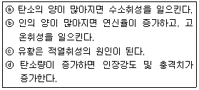
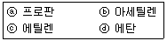

가스기사 (2012-08-26 기출문제)
1과목: 가스유체역학
1. 수평관 속에 유체가 완전 난류로 흐를 때 마찰손실은?
- 유속의 제곱에 비례해서 변한다.
- 원관의 길이에 반비례해서 변한다.
- 압력변화에 반비례해서 변한다.
- 원관 내경의 제곱에 반비례해서 변한다.
(정답률: 69%)

2. 유체를 한 방향으로만 보내기 위하여 사용되는 밸브에 해당하는 것은?
- 게이트밸브
- 글로브밸브
- 니들밸브
- 체크밸브
(정답률: 80%)
3. 파이프 내 점성흐름에서 길이방향으로 속도분포가 변하지 않는 흐름을 가리키는 것은?
- 플러그흐름(plug flow)
- 완전발달된 흐름(fully developed flow)
- 층류(laminar flow)
- 난류(turbulent flow)
(정답률: 87%)
4. 이상기체에서 정압비열을 Cp, 정적비열을 Cv로 표시할 때 엔탈피의 변화 dh는 어떻게 표시되는가?
- dh＝CpdT
- dh＝CvdT
- dh＝(Cp/Cv)·dT
- dh＝(Cp-Cv)·dT
(정답률: 58%)
5. 물이 내경 2㎝인 원형관을 평균유속 5㎝/s로 흐르고 있다. 같은 유량이 내경 1㎝인 관을 흐르면 평균 유속은?
- 1/2 감소
- 2배로 증가
- 4배로 증가
- 변함없다.
(정답률: 88%)
6. 등엔트로피 과정하에서 완전기체 중의 음속을 옳게 나타낸 것은? (단, E는 체적탄성계수, R은 기체상수, T는 기체의 절대온도, p는 압력, k는 비열비이다.)
- √(PE)
- √(kRT)
- RT
- PT
(정답률: 85%)
7. 수평 원관 속의 유체흐름이 층류일 경우 유량은?
- 관의 길이에 비례한다.
- 관직경의 4승에 비례한다.
- 압력강하에 반비례한다.
- 점성에 비례한다.
(정답률: 72%)
8. 유체를 거시적인 연속체로 볼 수 있는 요인으로서 가장 적합한 것은?
- 유체입자의 크기가 분자평균자유행로에 비해 충분히 크고 충돌시간은 충분히 짧을 것
- 유체입자의 크기가 분자평균자유행로에 비해 충분히 작고 충돌시간은 충분히 짧을 것
- 유체입자의 크기가 분자평균자유행로에 비해 충분히 크고 충돌시간은 충분히 길 것
- 유체입자의 크기가 분자평균자유행로에 비해 충분히 작고 충돌시간은 충분히 길 것
(정답률: 68%)
9. 다음 중 파스칼의 원리를 가장 옳게 설명한 것은?
- 밀폐 용기 내의 액체에 압력을 가하면 압력은 모든 부분에 동일하게 전달된다.
- 밀폐 용기 내의 액체에 압력을 가하면 압력은 가한 점에만 전달된다.
- 밀폐 용기 내의 액체에 압력을 가하면 압력은 그 반대편에만 전달된다.
- 밀폐 용기 내의 액체에 압력을 가하면 압력은 가한 점으로부터 일정한 간격을 두고 차등적으로 전달된다.
(정답률: 77%)
10. 왕복펌프 시스템에서 운전 중 공기실의 최고압력이 210㎏f/m2, 최소압력이 204㎏f/m2라고 할 때 이 펌프에 설치된 공기실의 압력변동율은 약 얼마인가? (단, 공기실이 평균부피일 때의 압력이 208㎏f/m2이다.)
- 0.029
- 0.062
- 0.132
- 0.154
(정답률: 56%)
11. 수압기에서 피스톤의 지름이 각각 25㎝와 5㎝이다. 작은 피스톤에 1㎏f의 하중을 가하면 큰 피스톤에는 몇 ㎏f의 하중이 가해지는가?
- 1
- 5
- 25
- 125
(정답률: 66%)
12. 직경이 10㎝인 원관 속에 비중이 0.85인 기름이 0.01m3/s로 흐르고 있다. 기름의 동점성계수가 1×10-4m2/s일 때 이 흐름의 상태는?
- 층류
- 난류
- 천이구역
- 비정상류
(정답률: 78%)
13. 내경이 2.22×10-3m인 작은 관에 0.275m/s의 평균 속도로 유체가 흐를 때 유량은 약 몇 m3/s인가?
- 1.06×10-6
- 2.7×10-5
- 5.23×10-5
- 6.13×10-6
(정답률: 64%)
14. 액체수송에 쓰이는 펌프의 연결이 옳지 않은 것은?
- 원심펌프 - turbine펌프
- 왕복펌프 - screw펌프
- 회전펌프 - gear펌프
- 특수펌프 - jet펌프
(정답률: 78%)
15. 다음 압축성 흐름 중 정체온도가 변할 수 있는 것은?
- 등엔트로피 팽창과정인 경우
- 단면이 일정한 도관에서 단열 마찰흐름인 경우
- 단면이 일정한 도관에서 등온 마찰흐름인 경우
- 모든 과정에서 정체온도는 변하지 않는 경우
(정답률: 53%)
16. 실제유체나 이상유체에 관계없이 모두 적용되는 것은?
- 질량보존의 법칙
- 점착조건
- 압축성 유체 가정
- 뉴턴의 점성법칙
(정답률: 81%)
17. 점성계수의 차원을 질량(M), 길이(L), 시간(T)으로 나타내면?
- ML-1T-1
- ML-2T
- ML-1T2
- ML-2
(정답률: 81%)
18. 단면적이 변화하는 수평 관로에 밀도가 ρ인 이상유체가 흐르고 있다. 단면적이 A1인 곳에서의 압력은 P1, 단면적이 A2인 곳에서의 압력은 P2이다. A2＝A1/2이면 단면적이 A2인 곳에서의 평균 유속은?




(정답률: 79%)
19. 수축-확대 노즐에서 확대 부분의 유속은?
- 초음속이 가능하다.
- 언제나 초음속이다.
- 언제나 아음속이다.
- 음속과 같다.
(정답률: 75%)
20. 다음 중 Mach 수를 의미하는 것은?
- 실제유동속도/음속
- 초음속/아음속
- 음속/실제유동속도
- 아음속/초음속
(정답률: 86%)
2과목: 연소공학
21. 위험성 평가기법 중 사고를 일으키는 장치의 이상이나 운전자 실수의 조합을 연역적으로 분석하는 평가기법은?
- FTA(Fault Tree Analysis)
- ETA(Event Tree Analysis)
- HAZOP(Hazard and Operability Studies)
- CCA(Cause Consequence Analysis)
(정답률: 70%)
22. 층류 연소속도는 연료와 산소의 이론혼합기 부근에서 최대값이 된다. 이 최대값이 가장 클 것으로 예상되는 가스는?
- 메탄
- 에틸렌
- 수소
- 일산화탄소
(정답률: 62%)
23. 고체연료의 연소과정 중 화염이동속도에 대한 설명으로 옳은 것은?
- 발열량이 낮을수록 화염이동속도는 커진다.
- 석탄화도가 높을수록 화염이동속도는 커진다.
- 입자직경이 작을수록 화염이동속도는 커진다.
- 1차 공기온도가 높을수록 화염이동속도는 작아진다.
(정답률: 62%)
24. 폭발을 원인에 따라 분류할 때 물리적 폭발에 해당되지 않는 것은?
- 증기폭발
- 중합폭발
- 금속선폭발
- 고체상 전이폭발
(정답률: 80%)
25. 다음 기체의 연소 반응 중 가스의 단위체적당 발열량(㎉/Sm3)이 가장 큰 것은?
- H2＋(1/2)O2 → H2O
- C2H2＋(5/2)O2 → 2CO2＋H2O
- C2H6＋(7/2)O2 → 2CO2＋3H2O
- CO＋(1/2)O2 → CO2
(정답률: 78%)
26. 연소부하율이 작지만 화염이 안정하고 조작이 용이하며 역화의 위험성이 적은 기체의 연소방식은?
- 확산연소
- 예혼합식
- 부분예혼합식
- 표면연소
(정답률: 71%)
27. 어떤 기관의 출력은 100kW이며 매 시간당 30㎏의 연료를 소모한다. 연료의 발열량이 8000㎉/㎏이라면 이 기관의 열효율은 약 얼마인가?
- 0.15
- 0.36
- 0.69
- 0.91
(정답률: 62%)
28. 공기비가 작을 때 연소에 미치는 영향이 아닌 것은?
- 불완전연소가 되어 매연발생이 심해진다.
- 미연소에 의한 열손실이 증가한다.
- 연소실내의 연소온도가 저하한다.
- 미연소 가스로 인한 폭발사고가 일어나기 쉽다.
(정답률: 67%)
29. 가스의 비열비(K＝Cp/Cv)의 값은?
- 항상 1보다 크다.
- 항상 0보다 작다.
- 항상 0이다.
- 항상 1보다 작다.
(정답률: 84%)
30. 다음 가연성 가스 중 위험도가 가장 큰 것은?
- 산화에틸렌
- 암모니아
- 메탄
- 일산화탄소
(정답률: 82%)
31. 부피조성으로 프로판 70%, 부탄 25%, 프로필렌 5%인 혼합가스에 대한 다음의 설명 중 옳은 것은? (단, 공기 중에서 가스의 폭발범위는 다음 표와 같다.)

- 폭발 하한값은 약 1.62%이다.
- 폭발 하한값은 약 1.97%이다.
- 폭발 상한값은 약 9.29%이다.
- 폭발 상한값은 약 9.78%이다.
(정답률: 71%)
32. 층류예혼합화염과 비교한 난류예혼합화염의 특징에 대한 설명으로 옳은 것은?
- 화염의 두께가 얇다.
- 화염의 밝기가 어둡다.
- 연소 속도가 현저하게 늦다.
- 화염의 배후에 다량의 미연소분이 존재한다.
(정답률: 75%)
33. 프로판 95%, 부탄 5%의 혼합가스 2L가 완전연소하는데 필요한 산소량은 약 몇 L인가?
- 5L
- 10L
- 15L
- 20L
(정답률: 60%)
34. 엔트로피의 증가에 대한 설명으로 옳은 것은?
- 비가역 과정의 경우 계와 외계의 에너지의 총합은 일정하고, 엔트로피의 총합은 증가한다.
- 비가역 과정의 경우 계와 외계의 에너지의 총합과 엔트로피의 총합이 함께 증가한다.
- 비가역 과정의 경우 물체의 엔트로피와 열원의 엔트로피의 합은 불변이다.
- 비가역 과정의 경우 계와 외계의 에너지의 총합과 엔트로피의 총합은 불변이다.
(정답률: 73%)
35. CO2가스 8k㏖을 101.3㎪에서 303.15K으로부터 723.15K까지 가열한다. 이때 가열열량은 얼마인가? (단, CO2의 정압몰 열량 Cp·m[kJ/k㏖·K]은 식 Cp·m＝26.748＋42.258×10-3T-14.247×10-6T2으로 주어진다.)
- 2.237×103kJ
- 3.154×104kJ
- 1.494×105kJ
- 1.496×106kJ
(정답률: 45%)
36. 시안화수소를 60일 이상 장기간 저장하지 못하게 하는 주된 이유는?
- 분해폭발의 위험성이 있으므로
- 산화폭발의 위험성이 있으므로
- 분진폭발의 위험성이 있으므로
- 중합폭발의 위험성이 있으므로
(정답률: 68%)
37. 혼합기체의 연소범위가 완전히 없어져 버리는 첨가기체의 농도를 피크농도라 하는데 이에 대한 설명으로 잘못된 것은?
- 질소(N2)의 피크농도는 약 37(vol%)이다.
- 이산화탄소(CO2)의 피크농도는 약 23(vol%)이다.
- 피크농도는 비열이 작을수록 작아진다.
- 피크농도는 열전달율이 클수록 작아진다.
(정답률: 62%)
38. 화격자 연소방식 중 하입식 연소에 대한 설명으로 옳은 것은?
- 산화층에서는 코크스화한 석탄입자표면에 충분한 산소가 공급되어 표면연소에 의한 탄산가스가 발생한다.
- 코크스화한 석탄은 환원층에서 아래 산화층에서 발생한 탄산가스를 일산화탄소로 환원한다.
- 석탄층은 연소가스에 직접 접하지 않고 상부의 고온산화층으로부터 전도와 복사에 의해 가열된다.
- 휘발분과 일산화탄소는 석탄층 위쪽에서 2차 공기와 혼합하여 기상연소한다.
(정답률: 57%)
39. 에너지 방출속도(energy release rate)에 대한 설명으로 틀린 것은?
- 화재와 관련하여 가장 중요한 값이다.
- 다른 요소와 비교할 때 간접적으로 화재의 크기와 손상 가능성을 나타낸다.
- 화염높이와 밀접한 관계가 있다.
- 화재 주위의 복사열유속과 직접 관련된다.
(정답률: 62%)
40. 수소(H2)의 기본특성에 대한 설명 중 틀린 것은?
- 가벼워서 확산하기 쉬우며 작은 틈새로 잘 발산한다.
- 고온, 고압에서 강재 등의 금속을 투과한다.
- 산소 또는 공기와 혼합하여 격렬하게 폭발한다.
- 생물체의 호흡에 필수적이며 연료의 연소에 필요하다.
(정답률: 80%)
3과목: 가스설비
41. 연소기구에 접속된 고무관이 노후화되어 0.6㎜의 구멍이 뚫려 수주 280㎜의 압력으로 LP가스가 4시간 누출되었을 경우 가스분출량은 약 몇 L인가? (단, LP가스의 분출압력에서 비중은 1.7이다.)
- 152.32L
- 166.32L
- 172.35L
- 182.35L
(정답률: 66%)
42. 증기압축식 냉동기에서 열을 흡수할 수 있는 적정량의 냉매량을 조절하는 것은?
- 압축기
- 응축기
- 팽창밸브
- 증발기
(정답률: 63%)
43. 정압기의 특성 중 부하변동에 대한 응답의 신속성과 안전성을 나타내는 것은?
- 정특성
- 동특성
- 사용최대차압
- 작동최소차압
(정답률: 69%)
44. 생산단계검사는 용기부속품이 안전하게 제조되었는지를 명확하게 판정하는데 필요한 검사이다. 성능검사방법의 항목이 아닌 것은?
- 작동성능
- 내압성능
- 기밀성능
- 재료의 기계적 성능
(정답률: 69%)
45. 고압가스 용접용기에 대한 내압검사 시 전증가량이 200㎖일 때 용기의 내압시험에 합격하려면 영구증가량은 얼마 이하가 되어야 합격인가?
- 10㎖
- 15㎖
- 20㎖
- 25㎖
(정답률: 76%)
46. 다음 압력 중 가장 높은 압력은?
- 1단 감압식 저압조정기의 조정압력
- 자동절체식 저압조정기의 출구 쪽 기밀시험압력
- 1단 감압식 저압조정기의 최대 폐쇄압력
- 자동절체식 일체형 저압조정기의 최대 폐쇄압력
(정답률: 55%)
47. 다음 중 아세틸렌의 압축 시 분해폭발의 위험을 최소로 줄이기 위한 반응장치는?
- 접촉반응장치
- I.G 반응장치
- 겔로그반응장치
- 레페반응장치
(정답률: 72%)
48. 도시가스배관의 내진설계 시 성능평가 항목이 아닌 것은?
- 지진파에 의해 발생하는 지반진동
- 지반의 영구변형
- 위험도 계수
- 도시가스 배관에 발생한 응력과 변형
(정답률: 55%)
49. 2단 감압방식의 장점에 대한 설명이 아닌 것은?
- 공급압력이 안정하다.
- 배관 입상에 의한 압력손실을 보정할 수 있다.
- 재액화에 대한 문제가 없다.
- 연소기구에 맞는 압력으로 공급이 가능하다.
(정답률: 77%)
50. 압축기에 사용하는 윤활유와 사용가스의 연결로 부적당한 것은?
- 수소 : 순광물성 기름
- 산소 : 디젤엔진유
- 아세틸렌 : 양질의 광유
- LPG : 식물성유
(정답률: 71%)
51. 분자량이 큰 탄화수소를 원료로 하며 고온(800~900℃)에서 분해하여 고칼로리의 가스를 제조하는 공정은?
- 수소화 분해공정
- 부분연소공정
- 접촉분해공정
- 열분해공정
(정답률: 77%)
52. 가스 연소기의 제품 성능시험에 대한 설명으로 옳은 것은?
- 연소기는 상용압력의 1.2배 이상으로 실시하는 기밀시험에서 누출이 없는 것으로 한다.
- 콕 및 전기점화장치는 10000회 반복조작시험 후 가스 누출이 없고, 성능에 이상이 없는 것으로 한다.
- 소화안전장치 및 호스연결구는 2000회 반복조작시험 후 가스누출이 없고, 성능에 이상이 없는 것으로 한다.
- 거버너는 30000회 반복조작시험 후 가스누출이 없고, 조정압력의 변화가 [0.⑤P(시험 전 조정압력)＋0.03]㎪ 이하인 것으로 한다.
(정답률: 55%)
53. 다음 [보기]와 같은 성질을 갖는 가스는?

- 산소
- 질소
- 염소
- 수소
(정답률: 71%)
54. 다음 안전밸브 형식 중 밸브 구멍의 지름이 목부 지름의 1.15배 이상인 것은?
- 고양정식
- 저양정식
- 전양정식
- 전량식
(정답률: 48%)
55. 고압가스 용기의 재료로 사용되는 강의 성분 중 탄소, 인, 유황의 함유량은 제한되고 있다. 그 이유로서 다음 [보기] 중 옳은 것으로만 나열된 것은?

- ⓐ, ⓑ
- ⓑ, ⓒ
- ⓒ, ⓓ
- ⓐ, ⓒ
(정답률: 68%)
56. 강의 표면에 수소가 발생하여 강의 조직 속에 확산되는 것과 도복장의 벗겨짐이 나타나는 현상은?
- 과방식
- 간섭
- 전기방식
- 부식
(정답률: 51%)
57. 단열 헤드 15014m, 흡입공기량 1.0 kgf/s를 내는 터보 압축기의 축동력이 191kW일 때의 전단열효율은?
- 76.1%
- 77.1%
- 78.1%
- 79.1%
(정답률: 60%)
58. 저온 장치에서 CO2와 수분이 존재 할 때 장치의 운전에 미치는 영향을 가장 바르게 설명한 것은?
- CO2는 저온에서 탄소와 수소를 분해하므로 큰 문제가 되지 않는다.
- CO2는 드라이아이스가 되어 배관, 밸브를 막아 가스의 흐름을 저해한다.
- CO2는 저장 장치의 촉매 기능을 하므로 효율을 상승시킨다.
- CO2는 가스의 순도를 저하시킨다.
(정답률: 75%)
59. 실린더 안지름 20㎝, 피스톤행정 15㎝, 매분회전수 300, 효율이 80%인 수평 1단 단동압축기가 있다. 지시평균유효압력을 0.2㎫로 하면 압축기에 필요한 전동기의 마력은 약 몇 PS인가? (단, 1㎫은 10㎏f/cm2로 한다.)
- 5.0
- 7.8
- 9.7
- 13.2
(정답률: 47%)
60. 가스누출경보기의 구조에 대한 설명으로 틀린 것은?
- 충분한 강도를 가지며, 엘리먼트의 교체가 용이한 것
- 경보기의 경보부와 검지부는 일체형으로 설치할 수 있는 것
- 검지부가 다점식인 경우에는 경보가 울릴 때 경보부에서 가스의 검지장소를 알 수 있는 것
- 경보는 램프의 점등 또는 점멸과 동시에 경보를 울리는 것
(정답률: 74%)
4과목: 가스안전관리
61. 가스용품 중 배관용 밸브 제조 시 기술기준으로 옳지 않은 것은?
- 밸브의 O-링과 패킹은 마모 등 이상이 없는 것으로 한다.
- 볼밸브는 핸들 끝에서 294.2N 이하의 힘을 가해서 90° 회전할 때 완전히 개폐하는 구조로 한다.
- 개폐용 핸들 휠의 열림 방향은 시계바늘 방향으로 한다.
- 볼밸브는 완전히 열렸을 때 핸들 방향과 유로 방향이 평행인 것으로 한다.
(정답률: 80%)
62. 액화프로판 50㎏을 충전하고자 할 때 용기의 내용적은? (단, 액화프로판의 가스정수는 2.35이다.)
- 21.3ℓ
- 50ℓ
- 1⑤.75ℓ
- 1l7.5ℓ
(정답률: 59%)
63. 충전용기를 적재한 차량운반 개시 전 점검 사항이 아닌 것은?
- 차량의 적재 중량 확인
- 용기의 고정상태 확인
- 용기의 보호캡 부착유무 확인
- 노면상태 확인
(정답률: 81%)
64. 안정성, 편리성 및 호환성을 확보하기 위한 일반용 액화석유가스 압력조정기의 구조 및 치수기준으로 옳은 것은?
- 출구압력을 변동시킬 수 있는 구조로 한다.
- 용량 30㎏/h 미만의 1단감압식 저압조정기는 몸통과 덮개를 일반공구로 분리할 수 없는 구조로 한다.
- 용량 10㎏/h를 초과하는 압력조정기의 방출구는 1/2B 이상의 배관 접속이 가능한 구조로 한다.
- 용량 100㎏/h 이하의 압력조정기는 입구 쪽에 황동선망 또는 스테인리스강선망을 사용한 스트레이너를 내장한 구조로 한다.
(정답률: 53%)
65. 다음 중 운반책임자를 동승시키지 않아도 되는 경우는?
- 압축가스 중 가연성가스 200m3를 운반할 때
- 압축가스 중 조연성가스 600m3를 운반할 때
- 액화가스 중 가연성가스 3000㎏를 운반할 때
- 액화가스 중 조연성가스 6000㎏를 운반할 때
(정답률: 70%)
66. 일반도시가스 사업의 공급시설에 대한 안전거리의 기준으로 옳은 것은?
- 가스발생기는 그 외면으로부터 사업장의 경계까지 3m 이상이 되도록 한다.
- 가스홀더는 그 외면으로부터 사업장의 경계까지 거리가 최고사용압력의 고압인 것은 20m 이상이 되도록 한다.
- 가스혼합기, 가스정제설비는 그 외면으로부터 사업장의 경계까지 13m 이상이 되도록 한다.
- 배송기, 압송기 등 공급시설의 부대설비는 그 외면으로 부터 사업장의 경계까지 2m 이상이 되도록 한다.
(정답률: 51%)
67. 10㎏의 LPG가 누출하여 폭발할 경우 TNT 폭발 위력으로 환산하면 TNT 몇 ㎏에 해당하는가? (단, 가스의 발열량은 12000㎉/㎏. TNT의 연소열은 1100㎉/㎏이고, 폭발효율은 3%이다.)
- 0.3
- 3.3
- 12
- 20
(정답률: 53%)
68. 공기액화분리장치의 폭발 원인이 될 수 없는 것은?
- 공기 취입구에서 아세틸렌 혼입
- 공기 중 질소 화합물 혼입
- 압축기 윤활유의 분해에 의한 탄화수소의 생성
- 공기 취입구에서 아르곤 혼입
(정답률: 62%)
69. 아세틸렌을 용기에 충전하는 때의 압력은 2.5㎫ 이하로 하고, 충전 후의 압력이 몇 ℃에서 몇 ㎫로 될 때까지 정치하여야 하는가?
- 15℃, 1.5㎫ 이하
- 20℃, 1.5㎫ 이하
- 15℃, 2.0㎫ 이하
- 20℃, 2.0㎫ 이하
(정답률: 63%)
70. “지식경제부령이 정하는 고압가스 관련 설비”에 해당 되지 않는 것은?(관련 규정 개정전 문제로 2018년 기준 산업통상지원부령입니다. 참고하세요.)
- 역화방지장치
- 압력조정기
- 자동차용 가스 자동주입기
- 긴급차단장치
(정답률: 50%)
71. 액화석유가스 저장탱크를 지상에 설치하는 경우 저장능력이 몇 톤 이상일 때 방류둑을 설치해야 하는가?
- 1000
- 2000
- 3000
- 5000
(정답률: 52%)
72. 저장탱크에 의한 LPG 사용시설에서 배관에 대한 내압시험 압력의 기준은?
- 0.8㎫ 이상의 압력
- 1.8㎫ 이상의 압력
- 상용압력의 1.25배 이상의 압력
- 상용압력의 1.5배 이상의 압력
(정답률: 65%)
73. 특정고압가스를 사용하고자 한다. 다음 중 신고 대상이 아닌 것은?
- 저장능력 10세제곱미터의 압축가스 저장능력을 갖추고 디실란을 사용하는 자
- 저장능력 200㎏의 액화가스 저장능력을 갖추고 액화암모니아를 사용하는 자
- 저장능력 250㎏의 액화가스 저장능력을 갖추고 액화산소를 사용하는 자
- 저장능력 200세제곱미터의 압축가스 저장능력을 갖추고 학교실험실에서 수소를 사용하는 자
(정답률: 66%)
74. 압축가스 100m3 충전용기를 차량에 적재하여 운반할 때 휴대하여야 할 소화설비의 기준으로 옳은 것은?
- BC용, B-10 이상 분말소화제를 2개 이상 비치
- B용, B-8 이상 분말소화제를 2개 이상 비치
- ABC용, B-10 이상 포말소화제를 1개 이상 비치
- ABC용, B-8 이상 포말소화제를 1개 이상 비치
(정답률: 73%)
75. 50㎏의 액체프로판이 기화되어 가스 상태로 되었다. 이때 프로판 체적은 표준상태에서 몇 L가 되는가?
- 15000
- 20455
- 25455
- 30000
(정답률: 60%)
76. 가스사용 업무용 대형연소기의 상시샘플검사 항목이 아닌 것은?
- 가스통로의 기밀성능
- 연소상태 성능
- 안전장치 작동성능
- 표시의 적합 여부
(정답률: 45%)
77. 상온, 상압, 공기 중에서 다음 가스의 폭발범위가 넓은 순으로 바르게 나열된 것은?

- ⓑ＞ⓒ＞ⓐ＞ⓓ
- ⓑ＞ⓒ＞ⓓ＞ⓐ
- ⓑ＞ⓓ＞ⓒ＞ⓐ
- ⓒ＞ⓑ＞ⓐ＞ⓓ
(정답률: 58%)
78. 액화석유가스 충전소의 용기 보관장소에 충전용기를 보관하는 때의 기준으로 옳지 않은 것은?
- 용기 보관장소의 주위 8m 이내에는 석유, 휘발유를 보관하여서는 아니 된다.
- 충전용기는 항상 40℃ 이하를 유지하여야 한다.
- 용기가 너무 냉각되지 않도록 겨울철에는 직사광선을 받도록 조치하여야 한다.
- 충전용기와 잔가스용기는 각각 구분하여 놓아야 한다.
(정답률: 80%)
79. 지상에 배관을 설치(공업지역 제외)한 도시가스사업자가 유지하여야 할 상용압력별 공지의 폭으로 적합하지 않은 것은?
- 5.0㎫ - 19m
- 2.0㎫ - 16m
- 0.5㎫ - 8m
- 0.l㎫ - 6m
(정답률: 55%)
80. 다음 중 퓨즈콕의 의무 표시사항이 아닌 것은?
- 보증기간
- 권장사용기간
- 제조번호 또는 로트번호
- 용도
(정답률: 56%)
5과목: 가스계측기기
81. 목표값을 측정하는데 제어량을 목표값에 일치되도록 하는 추치제어 방식이 아닌 것은?
- 추종제어
- 비율제어
- 프로그램제어
- 정치제어
(정답률: 65%)
82. 다음 중 on-off 제어동작의 특성이 아닌 것은?
- 사이클링(cycling) 현상을 일으킨다.
- 외란에 의하여 잔류편차가 발생한다.
- 설정값 부근에서 제어량이 일정하지 않다.
- 목표값을 중심으로 진동현상이 일어난다.
(정답률: 54%)
83. 검지관에 의한 프로판의 측정농도 범위와 검지 한도를 각각 바르게 나타낸 것은?
- 0~0.3%, 10ppm
- 0~1.5%, 250ppm
- 0~5%, 100ppm
- 0~30%, 1000ppm
(정답률: 67%)
84. 계량의 기준이 되는 기본단위가 아닌 것은?
- 길이
- 온도
- 면적
- 광도
(정답률: 70%)
85. 열전대식 온도계 중 정도가 높고 고온측정 시 안정성이 좋으나 환원성 분위기에 약하고 금속증기에 침식되기 쉬운 것은?
- 철-콘스탄탄
- 구리-콘스탄탄
- 백금-백금·로듐
- 크로멜-알루멜
(정답률: 64%)
86. 회전수가 비교적 늦기 때문에 일반적으로 100m3/h 이하의 소용량 가스계량에 적합하며 독립내기식과 그로바식으로 구분되는 가스미터는?
- 막식
- 루트미터
- 로터리피스톤식
- 습식
(정답률: 73%)
87. 시정수(time constant)가 5sec인 1차 지연형 계측기의 스탭 응답(step response)에서 전변화의 95%까지 변화하는데 걸리는 시간은?
- 10초
- 15초
- 20초
- 30초
(정답률: 60%)
88. 비례적분 제어동작에 대한 설명으로 옳은 것은?
- 진동이 제거되어 빨리 안정된다.
- 출력이 제어편차의 시간변화에 비례한다.
- 부하가 아주 작은 프로세스에 적용된다.
- 전달느림이 크면 사이클링의 주기가 커진다.
(정답률: 47%)
89. 스테판-볼쯔만의 이론을 적용한 온도계는?
- 열전대온도계
- 방사온도계
- 광고온도계
- 바이메탈식 온도계
(정답률: 54%)
90. 피토관계수가 0.95인 피토관으로 어떤 기체의 속도를 측정하였더니 그 차압이 25㎏f/m2 임을 알았다. 이때의 유속은 약 몇 m/s인가? (단, 유체의 비중량은 1.2㎏f/m3이다.)
- 19.20
- 25.56
- 27.47
- 30.09
(정답률: 37%)
91. 가스크로마토그래피에서 액체흡착제를 사용할 때 분리의 바탕이 되는 것은?
- 확산전류의 차
- 분배계수의 차
- 가스용적의 차
- 흡착계수의 차
(정답률: 43%)
92. 저압에서 기체의 열전도도는 압력에 비례하는 원리를 이용한 진공계는?
- 맥라우드 진공계
- 피라니 진공계
- 전리 진공계
- 가이슬러관
(정답률: 52%)
93. 게겔(Gockel)법을 이용하여 가스를 흡수 분리할 때 33% KOH로 분리되는 가스는?
- 이산화탄소
- 에틸렌
- 아세틸렌
- 일산화탄소
(정답률: 70%)
94. 용적식 유량계의 방식 중 측정 유체가 액체용이 아닌 것은?
- 원형 기어식
- 나선형 회전자식
- 로터리 피스톤식
- 막식
(정답률: 58%)
95. 자를 가지고 공작물의 길이를 측정하였다. 시선의 경사각이 15°이고, 자의 두께가 1.5㎜일 때 얼마의 시차가 발생하는가?
- 0.35㎜
- 0.40㎜
- 0.45㎜
- 0.50㎜
(정답률: 52%)
96. 어떤 온도 경계에서 전기저항이 갑자기 감소하는 특성을 가지는 서미스터(Thermistor)는?
- NTC(Negative Temperature Coefficient) 서미스터
- PTC(Positive Temperature Coefficient) 서미스터
- CTR(Critical Temperature Resistor) 서미스터
- PNTC(Positive& Negative Temperature Coefficient) 서미스터
(정답률: 60%)
97. 가스미터의 설치 시 주의사항으로 가장 거리가 먼 것은?
- 지상에서는 벽면에 설치한다.
- 옥외설치는 직사광선을 피한다.
- 통로 가까이에 설치는 피한다.
- 실내에 설치된 대형은 상자 속에 격납한다.
(정답률: 68%)
98. 오르자트(Orsat)가스 분석기의 특징으로 틀린 것은?
- 구조가 간단하고 취급이 용이하다.
- 가스의 흡수에 따른 흡수제가 정해져 있다.
- 수분을 포함한 습식배기 가스의 성분 분석이 용이하다.
- 연속측정이 불가능하다.
(정답률: 58%)
99. 차압식 오리피스 유량계에서 오리피스 전후의 압력차이가 처음보다 4배 만큼 커졌을 때 유량은 어떻게 변하는가? (단, 다른 조건은 모두 같으며 Q1, Q2는 각각 처음과 나중의 유량을 나타낸다.)
- Q2＝Q1
- Q2＝2Q1
- Q2＝√2 Q1
- Q2＝4Q1
(정답률: 56%)
100. 다음 중 직접식 액면 측정기는?
- 방사선식 액면계
- 정전용량식 액면계
- 부자식 액면계
- 초음파식 액면계
(정답률: 71%)